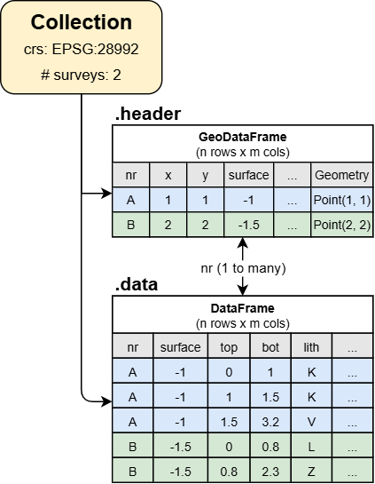

Introduction to GeoST#
This introduction will cover some of the key concepts and basic features of GeoST to help you get started. GeoST depends on popular data science libraries Pandas and GeoPandas but GeoST provides readily available, frequently used selections on data held in pandas.DataFrame or geopandas.GeoDataFrame objects. This makes GeoST an easy to use option for less experienced Python users while more experienced users can easily access the underlying DataFrames and apply their own analyses.
GeoST is designed to work with many different kinds of subsurface data that are available. The package is a work-in-progress and we aim to support an increasing number of data sources. Below is a list of different data sources which are currently supported or will be supported by GeoST in the future:
From local files:
Tabular data of borehole, CPT, etc. (.parquet, .csv)
Geological boreholes xml (BHR-G)
Geotechnical boreholes xml (BHR-GT)
Pedological boreholes xml (BHR-P)
Cone Penetration Test xml/gef (CPT)
Pedological soilprofile descriptions xml (SFR)
BORIS xml (TNO borehole description software)
NLOG boreholes Excel
Directly from the BRO REST-API:
BHR-G
BHR-GT
BHR-P
CPT
SFR
BRO models:
GeoTOP: from local NetCDF or directly via OPeNDAP server
Planned:
Well logs LAS/ASCII
REGIS II
Dino xml geological boreholes
BHR-G gef
Soilmap of the Netherlands
GeoST also plans support for several Geophysical data sources such as Seismic, ERT, EM and others.
Concept#
The core data structure is a geost.Collection. This holds all the spatial information of any kind of data source in a “header” attribute (i.e. header table), and the corresponding data in a “data” attribute (i.e. data table). So for example, a set of 100 boreholes is held in a Collection where the “header” contains one row per data entry and provides information about the id, location, surface level and depths and the “data” has the survey information for each described layer. The structure of a Collection is illustrated below.

When working with a Collection, GeoST automatically keeps track of the alignment and thus makes sure each data entry occurs in both the “header” and “data” attributes. For example, when a user deletes an individual borehole entry from the “header”, the Collection ensures it is deleted from the “data” as well.
Note
User guide: Checkout the Data structures section in the user guide for a more detailed explanation of the GeoST data structures.
The Basics#
Data is usually loaded through various reader functions (see API reference). For this tutorial, GeoST provides a test set of boreholes in the area of the Utrecht Science Park which can be directly loaded as a Collection. Let’s read the data, print the result to see what it says and also plot the locations to get an idea where we are:
import geost
usp_boreholes = geost.data.boreholes_usp()
print(usp_boreholes)
usp_boreholes.header.explore() # Interactive plot of the borehole locations.
Collection
header (rows, columns) : (67, 5)
data (rows, columns) : (1398, 32)
crs: Amersfoort / RD New
vertical datum: NAP height
As you can see, ‘usp_boreholes’ is of the type Collection. Additionally, it shows the number of rows and columns in the header and data tables, the coordinate reference system and the number of surveys.
The “header” attribute in a Collection contains all the information about each borehole such as the ID, x- and y-coordinates and further metadata. Also it contains geometry objects for each borehole which allows for spatial selections and exports to GIS-supported formats etc. that are provided by GeoST. The header attribute is a geopandas.GeoDataFrame instance. Let’s see what the attribute looks like by printing it:
usp_boreholes.header.head() # First five rows of the header data.
| nr | x | y | surface | geometry | |
|---|---|---|---|---|---|
| 0 | B31H0541 | 139585 | 456000 | 1.20 | POINT (139585 456000) |
| 1 | B31H0611 | 139600 | 455060 | 1.20 | POINT (139600 455060) |
| 2 | B31H0718 | 139950 | 455200 | 1.30 | POINT (139950 455200) |
| 3 | B31H0803 | 139675 | 455087 | 2.16 | POINT (139675 455087) |
| 4 | B31H0806 | 139684 | 455384 | 1.00 | POINT (139684 455384) |
Since the header is a GeoDataFrame, we have direct access to all methods provided by GeoDataFrames. Therefore, the above interactive plot of the borehole locations was easily created using the .explore() method. More experienced Python users can therefore use the header to do any customized operation with GeoDataFrames they would normally do.
The other key attribute of a collection is the “data” attribute which is a pandas.DataFrame instance. This contains the actual logged data (i.e. layer descriptions) of the boreholes. In this case, the “data” attribute contains “layered” data because the borehole data is logged in terms of layers (i.e. depth intervals over which properties are the same) with “top” and “bottom”. Let’s see what it looks like:
usp_boreholes.data.head() # First five rows of the data table.
| nr | x | y | surface | end | top | bottom | lith | zm | zmk | ... | cons | color | lutum_pct | plants | shells | kleibrokjes | strat_1975 | strat_2003 | strat_inter | desc | |
|---|---|---|---|---|---|---|---|---|---|---|---|---|---|---|---|---|---|---|---|---|---|
| 0 | B31H0541 | 139585 | 456000 | 1.2 | -9.9 | 0.00 | 0.20 | K | NaN | NaN | ... | NaN | ON | NaN | 0 | 0 | 0 | NaN | EC | NaN | [TEELAARDE#***#****#*] .......................... |
| 1 | B31H0541 | 139585 | 456000 | 1.2 | -9.9 | 0.20 | 0.60 | K | NaN | NaN | ... | NaN | BR | NaN | 0 | 0 | 0 | NaN | EC | NaN | [KLEI#***#****#*] grysbruin. |
| 2 | B31H0541 | 139585 | 456000 | 1.2 | -9.9 | 0.60 | 0.95 | V | NaN | NaN | ... | NaN | BR | NaN | 0 | 0 | 0 | NaN | NI | NaN | [VEEN#***#****#*] donkerbruin. |
| 3 | B31H0541 | 139585 | 456000 | 1.2 | -9.9 | 0.95 | 2.80 | Z | NaN | ZMFO | ... | NaN | GR | NaN | 0 | 0 | 0 | NaN | EC | NaN | [ZAND#***#****#*] FYN TOT matig fyn# iets slib... |
| 4 | B31H0541 | 139585 | 456000 | 1.2 | -9.9 | 2.80 | 4.20 | Z | NaN | ZFC | ... | NaN | BR | NaN | 0 | 0 | 0 | NaN | BXWI | NaN | [ZAND#***#****#*] fyn# grysbruin. |
5 rows × 32 columns
Also with the “data” attribute, we have direct access to all methods provided by DataFrames and more experienced Python users can use it to do any customized operation. The “data” attribute of this collection contains 32 different columns that hold the relevant borehole data and describes characteristics such as lithology, sand grain size, plant remains and others.
Positional reference#
A collection contains all spatial information about the data, both horizontally and vertically. These attributes can be accessed through the “crs” (coordinate reference system) and “vertical_datum” attributes:
print(usp_boreholes.crs)
print(usp_boreholes.vertical_datum)
EPSG:28992
EPSG:5709
These attributes can be used to reproject the data. For example, changing the Dutch “Rijksdriehoekstelsel” coordinates to “WGS84” coordinates. Any reprojection automatically updates the coordinates in the data. Let’s change the coordinate reference system in “usp_boreholes” and checkout the “header” again to see this:
usp_boreholes.to_crs(4326) # Change from RD to WGS 84
print(usp_boreholes.header.head(), usp_boreholes.crs, sep="\n")
nr x y surface geometry
0 B31H0541 5.162268 52.092042 1.20 POINT (5.16227 52.09204)
1 B31H0611 5.162530 52.083594 1.20 POINT (5.16253 52.08359)
2 B31H0718 5.167630 52.084862 1.30 POINT (5.16763 52.08486)
3 B31H0803 5.163622 52.083839 2.16 POINT (5.16362 52.08384)
4 B31H0806 5.163740 52.086508 1.00 POINT (5.16374 52.08651)
EPSG:4326
Note that the coordinates in the “x” and “y” columns have indeed been changed to latitude, longitude coordinates.
Selections and slices#
There are several ways to make subsets from a Collection, such as:
Spatial selections
select_within_bbox- Select data points in the Collection within a bounding boxselect_with_points- Select data points in the Collection within distance to other point geometriesselect_with_lines- Select data points in the Collection within distance from line geometriesselect_within_polygons- Select data points in the Collection within polygon geometries
Conditional selections
select_by_values- Select data points in the Collection based on the presence of certain values in one or more of the data columnsselect_by_length- Select data points in the Collection based on length requirementsselect_by_depth- Select data points in the Collection based on depth constraints
Slicing
slice_depth_interval- Slice boreholes in the Collection down to the specified depth intervalslice_by_values- Slice boreholes in the Collection based on value (e.g. only sand layers, remove others).
We will not go through each of these methods in this quick start but please see the API Reference for more details.